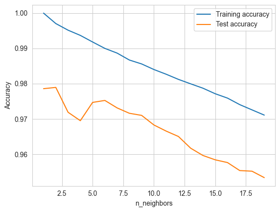

Inicio de modelos#
import joblib
import seaborn as sns
from sklearn.metrics import mean_squared_error, r2_score, mean_absolute_percentage_error, mean_squared_log_error
from sklearn.model_selection import train_test_split
import numpy as np
import pandas as pd
from statsmodels.graphics.tsaplots import plot_pacf
import matplotlib.pyplot as plt
from skopt import BayesSearchCV
from sklearn.preprocessing import MinMaxScaler
from sklearn.linear_model import LinearRegression
from sklearn.metrics import r2_score
from sklearn.model_selection import cross_val_score
from sklearn.preprocessing import StandardScaler
from sklearn.pipeline import Pipeline
from sklearn.preprocessing import MinMaxScaler
import statsmodels.api as sm
from IPython.display import display
from statsmodels.stats.diagnostic import acorr_ljungbox
from scipy.stats import jarque_bera
from sklearn.model_selection import train_test_split
from sklearn.model_selection import GridSearchCV
from sklearn import neighbors
from sklearn.metrics import explained_variance_score
from sklearn.neighbors import KNeighborsRegressor
from sklearn.linear_model import LinearRegression
from sklearn.linear_model import Ridge
from sklearn.linear_model import Lasso
import mglearn
import plotly.express as px
from typing import Tuple, List, Any
sns.set_style("whitegrid")
holt = pd.read_excel('for_Holt.xlsx')
holt = holt.drop(['Codigo_Dpto', 'Nro_Grupos_40', 'Nro_Grupos_30', 'Nro_Grupos_25'],axis='columns')
class data_model :
def __init__(self, data, test_period):
X_train = data[data['Periodo']<test_period].drop(['Demanda_Max_Estimada','Titulo_Curso'], axis='columns').reset_index(drop=True)
X_test = data[data['Periodo']==test_period].drop(['Demanda_Max_Estimada','Titulo_Curso'], axis='columns').reset_index(drop=True)
y_train = pd.DataFrame(data[data['Periodo']<test_period]['Demanda_Max_Estimada'].reset_index(drop=True))
y_test = pd.DataFrame(data[data['Periodo']==test_period]['Demanda_Max_Estimada'].reset_index(drop=True))
self.X_train = X_train
self.X_test = X_test
self.y_train = y_train
self.y_test = y_test
def calcular_metricas(y_true, y_pred):
y_true = np.array(y_true)
y_pred = np.array(y_pred)
rmse = np.sqrt(np.mean((y_true - y_pred) ** 2))
lst = []
for i in range(len(y_true)):
if y_true[i] != 0:
num = (y_true[i]-y_pred[i])/y_true[i]
lst.append(num)
mape = np.mean(lst) * 100
ss_res = np.sum((y_true - y_pred) ** 2)
ss_tot = np.sum((y_true - np.mean(y_true)) ** 2)
r2 = 1 - (ss_res / ss_tot)
lb_test = acorr_ljungbox(y_true - y_pred, lags=[10], return_df=True)
ljung_box_p_value = lb_test['lb_pvalue'].iloc[0]
jb_test = jarque_bera(y_true - y_pred)
jarque_bera_p_value = jb_test[1]
return {'RMSE': [rmse], 'MAPE': [mape], 'R2': [r2], 'Ljung-Box p-value': [ljung_box_p_value],'Jarque-Bera p-value': [jarque_bera_p_value]}
def get_len(df, index):
if index + 2 >= len(df):
return 0
periodo = df.iloc[index+2]['Periodo']
return len(df[df['Periodo']==periodo])
def training(*, data, parameters, regressor):
best_model = None
best_score = 10000
for parameter in parameters:
if regressor == 'linear':
reg = LinearRegression()
elif regressor == 'knn':
reg = KNeighborsRegressor(n_neighbors = parameter)
index = 0
while index < len(data.X_train):
len_train = get_len(data.X_train, index)
xtrain = (data.X_train[index:index+ len_train]).drop('Periodo',axis='columns')
ytrain = (data.y_train[index:index+ len_train])
if len(xtrain)>0 and len(ytrain)>0 :
reg.fit(xtrain, ytrain)
index += len_train
predicted = reg.predict(data.X_test.drop('Periodo',axis='columns'))
rmse = np.sqrt(np.mean((data.y_test - predicted) ** 2))
if rmse < best_score:
best_score = rmse
best_model = reg
return best_model
mayores = data_model(holt[holt['Demanda_Max_Estimada']>40],202410)
menores = data_model(holt[holt['Demanda_Max_Estimada']<=40],202410)
Knn#
training_accuracy = []
test_accuracy = []
best_score = 0
tuple_scores = None
neighbors_settings = range(1, 20)
for n_neighbors in neighbors_settings:
knn =KNeighborsRegressor(n_neighbors=n_neighbors)
knn.fit(mayores.X_train, mayores.y_train)
training_accuracy.append(knn.score(mayores.X_train, mayores.y_train))
test_accuracy.append(knn.score(mayores.X_test, mayores.y_test))
scores = [(knn.score(mayores.X_train, mayores.y_train)), knn.score(mayores.X_test, mayores.y_test) ]
score = np.mean(scores)
if score > best_score :
best_score = score
best_parameters = {'n_neighbors': n_neighbors}
plt.plot(neighbors_settings, training_accuracy, label="Training accuracy")
plt.plot(neighbors_settings, test_accuracy, label="Test accuracy")
plt.ylabel("Accuracy")
plt.xlabel("n_neighbors")
plt.legend( )
dx = {}
dx["Best cross-validation accuracy:"] = [best_score]
dx["Best parameters:"] = [best_parameters]
plt.show()
pd.DataFrame(dx)

| Best cross-validation accuracy: | Best parameters: | |
|---|---|---|
| 0 | 0.989295 | {'n_neighbors': 1} |
knn =KNeighborsRegressor(n_neighbors=1)
knn.fit(mayores.X_train.drop('Periodo',axis='columns'), mayores.y_train)
pred = knn.predict(mayores.X_test.drop('Periodo',axis='columns'))
pd.DataFrame(calcular_metricas(mayores.y_test, pred))
| RMSE | MAPE | R2 | Ljung-Box p-value | Jarque-Bera p-value | |
|---|---|---|---|---|---|
| 0 | 23.179258 | 0.553843 | 0.981923 | 1.277483e-10 | 0.0 |
fig,ax=plt.subplots(2,3);fig.set_size_inches(14,9);
sub = []
for i in pred:
sub.append(float(pred[0]))
pred = sub
y1 = list(pred); y2 = list(mayores.y_test['Demanda_Max_Estimada']);
residuos_knn = [ ]
for index,(uno, dos) in enumerate(zip(y1, y2)):
residuos_knn.append(uno - dos)
data = pd.DataFrame({
'Predicciones': y1,
'Valores Reales': y2,
'residuos': residuos_knn
})
ax[0][0].set_title('Valores reales vs Predichos')
ax[0][0].plot(data[ 'Valores Reales'],'-')
ax[0][0].plot(data['Predicciones'],'-')
ax[0][0].legend(['Valores Reales', 'Predicciones'])
ax[0][0].set_ylabel('valores')
ax[0][0].set_xlabel('z')
plot_pacf(residuos_knn, lags=12, ax=ax[1][0])
ax[1][0].set_ylabel('f(n)')
ax[1][0].set_xlabel('n')
ax[0][1].set_title('Histograma de Residuos')
ax[0][1].hist(data['residuos'])
sm.qqplot(data['residuos'], line='s', ax=ax[1][1])
ax[1][1].set_title('QQ-plot de Residuos')
ax[1][1].set_xlabel('Cuantiles Teóricos')
ax[1][1].set_ylabel('Cuantiles Muestrales')
ax[0][2].plot(data['residuos'])
ax[0][2].set_title('Residuos')
C:\Users\loren\AppData\Local\Temp\ipykernel_19516\976234623.py:5: DeprecationWarning: Conversion of an array with ndim > 0 to a scalar is deprecated, and will error in future. Ensure you extract a single element from your array before performing this operation. (Deprecated NumPy 1.25.)
sub.append(float(pred[0]))
Text(0.5, 1.0, 'Residuos')
Entrenamiento por periodo#
knn = training( data = mayores, parameters = [1], regressor = 'knn')
pred = knn.predict(mayores.X_test.drop('Periodo',axis='columns'))
pd.DataFrame(calcular_metricas(mayores.y_test, pred))
| RMSE | MAPE | R2 | Ljung-Box p-value | Jarque-Bera p-value | |
|---|---|---|---|---|---|
| 0 | 49.603407 | 1.504835 | 0.917215 | 6.303680e-09 | 0.0 |
fig,ax=plt.subplots(2,3);fig.set_size_inches(14,9);
sub = []
for i in pred:
sub.append(float(pred[0]))
pred = sub
y1 = list(pred); y2 = list(mayores.y_test['Demanda_Max_Estimada']);
residuos_knn = [ ]
for index,(uno, dos) in enumerate(zip(y1, y2)):
residuos_knn.append(uno - dos)
data = pd.DataFrame({
'Predicciones': y1,
'Valores Reales': y2,
'residuos': residuos_knn
})
ax[0][0].set_title('Valores reales vs Predichos')
ax[0][0].plot(data[ 'Valores Reales'],'-')
ax[0][0].plot(data['Predicciones'],'-')
ax[0][0].legend(['Valores Reales', 'Predicciones'])
ax[0][0].set_ylabel('valores')
ax[0][0].set_xlabel('z')
plot_pacf(residuos_knn, lags=12, ax=ax[1][0])
ax[1][0].set_ylabel('f(n)')
ax[1][0].set_xlabel('n')
ax[0][1].set_title('Histograma de Residuos')
ax[0][1].hist(data['residuos'])
sm.qqplot(data['residuos'], line='s', ax=ax[1][1])
ax[1][1].set_title('QQ-plot de Residuos')
ax[1][1].set_xlabel('Cuantiles Teóricos')
ax[1][1].set_ylabel('Cuantiles Muestrales')
ax[0][2].plot(data['residuos'])
ax[0][2].set_title('Residuos')
C:\Users\loren\AppData\Local\Temp\ipykernel_19516\976234623.py:5: DeprecationWarning: Conversion of an array with ndim > 0 to a scalar is deprecated, and will error in future. Ensure you extract a single element from your array before performing this operation. (Deprecated NumPy 1.25.)
sub.append(float(pred[0]))
Text(0.5, 1.0, 'Residuos')
knn para demanda <= 40#
knn =KNeighborsRegressor(n_neighbors=1)
knn.fit(menores.X_train.drop('Periodo',axis='columns'), menores.y_train)
pred = knn.predict(menores.X_test.drop('Periodo',axis='columns'))
pd.DataFrame(calcular_metricas(menores.y_test, pred))
| RMSE | MAPE | R2 | Ljung-Box p-value | Jarque-Bera p-value | |
|---|---|---|---|---|---|
| 0 | 0.670321 | 0.08116 | 0.996035 | 0.300425 | 1.360857e-140 |
fig,ax=plt.subplots(2,3);fig.set_size_inches(14,9);
sub = []
for i in pred:
sub.append(float(i[0]))
pred = sub
y1 = list(pred); y2 = list(menores.y_test['Demanda_Max_Estimada']);
residuos_knn = [ ]
for index,(uno, dos) in enumerate(zip(y1, y2)):
residuos_knn.append(uno - dos)
data = pd.DataFrame({
'Predicciones': y1,
'Valores Reales': y2,
'residuos': residuos_knn
})
ax[0][0].set_title('Valores reales vs Predichos')
ax[0][0].plot(data[ 'Valores Reales'],'-')
ax[0][0].plot(data['Predicciones'],'-')
ax[0][0].legend(['Valores Reales', 'Predicciones'])
ax[0][0].set_ylabel('valores')
ax[0][0].set_xlabel('z')
plot_pacf(residuos_knn, lags=12, ax=ax[1][0])
ax[1][0].set_ylabel('f(n)')
ax[1][0].set_xlabel('n')
ax[0][1].set_title('Histograma de Residuos')
ax[0][1].hist(data['residuos'])
sm.qqplot(data['residuos'], line='s', ax=ax[1][1])
ax[1][1].set_title('QQ-plot de Residuos')
ax[1][1].set_xlabel('Cuantiles Teóricos')
ax[1][1].set_ylabel('Cuantiles Muestrales')
ax[0][2].plot(data['residuos'])
ax[0][2].set_title('Residuos')
Text(0.5, 1.0, 'Residuos')
Entrenamiento por periodo#
knn = training( data = mayores, parameters = [1], regressor = 'knn')
pred = knn.predict(mayores.X_test.drop('Periodo',axis='columns'))
pd.DataFrame(calcular_metricas(mayores.y_test, pred))
| RMSE | MAPE | R2 | Ljung-Box p-value | Jarque-Bera p-value | |
|---|---|---|---|---|---|
| 0 | 49.603407 | 1.504835 | 0.917215 | 6.303680e-09 | 0.0 |
Ridge#
training_accuracy = []
test_accuracy = []
best_score = 0
tuple_scores = None
alphas = [0.01, 0.1, 1, 10, 100]
for alpha in alphas:
ridge = Ridge(alpha=alpha)
ridge.fit(menores.X_train.drop('Periodo',axis='columns'), menores.y_train)
training_accuracy.append(ridge.score(menores.X_train.drop('Periodo',axis='columns'), menores.y_train))
test_accuracy.append(ridge.score(menores.X_test.drop('Periodo',axis='columns'), menores.y_test))
scores = [(ridge.score(menores.X_train.drop('Periodo',axis='columns'), menores.y_train)), ridge.score(menores.X_test.drop('Periodo',axis='columns'), menores.y_test) ]
score = np.mean(scores)
if score > best_score:
best_score = score
tuple_scores = (scores[0], scores[1])
best_parameters = {'alpha': alpha}
dx = {}
dx["Best cross-validation accuracy:"] = [best_score]
dx["Best parameters:"] = [best_parameters]
dx["Tuple Scores"] = [tuple_scores]
pd.DataFrame(dx)
| Best cross-validation accuracy: | Best parameters: | Tuple Scores | |
|---|---|---|---|
| 0 | 0.822922 | {'alpha': 0.01} | (0.8170508706694307, 0.8287935210043863) |
ridge = Ridge(alpha=best_parameters['alpha'])
ridge.fit(menores.X_train.drop('Periodo',axis='columns'), menores.y_train)
pred = ridge.predict(menores.X_test.drop('Periodo',axis='columns'))
pd.DataFrame(calcular_metricas(menores.y_test, pred))
| RMSE | MAPE | R2 | Ljung-Box p-value | Jarque-Bera p-value | |
|---|---|---|---|---|---|
| 0 | 4.404499 | -26.083763 | 0.828794 | 1.047324e-19 | 1.538209e-44 |
fig,ax=plt.subplots(2,3);fig.set_size_inches(14,9);
sub = []
for i in pred:
sub.append(float(i[0]))
pred = sub
y1 = list(pred)
y2 = list(menores.y_test['Demanda_Max_Estimada']);
residuos_knn = [ ]
for index,(uno, dos) in enumerate(zip(y1, y2)):
residuos_knn.append(uno - dos)
data = pd.DataFrame({'Predicciones': y1, 'Valores Reales': y2, 'residuos': residuos_knn})
ax[0][0].set_title('Valores reales vs Predichos')
ax[0][0].plot(data[ 'Valores Reales'],'-')
ax[0][0].plot(data['Predicciones'],'-')
ax[0][0].legend(['Valores Reales', 'Predicciones'])
ax[0][0].set_ylabel('valores')
ax[0][0].set_xlabel('z')
plot_pacf(residuos_knn, lags=12, ax=ax[1][0])
ax[1][0].set_ylabel('f(n)')
ax[1][0].set_xlabel('n')
ax[0][1].set_title('Histograma de Residuos')
ax[0][1].hist(data['residuos'])
sm.qqplot(data['residuos'], line='s', ax=ax[1][1])
ax[1][1].set_title('QQ-plot de Residuos')
ax[1][1].set_xlabel('Cuantiles Teóricos')
ax[1][1].set_ylabel('Cuantiles Muestrales')
ax[0][2].plot(data['residuos'])
ax[0][2].set_title('Residuos')
Text(0.5, 1.0, 'Residuos')
Lasso#
training_accuracy = [ ]
test_accuracy = [ ]
best_score = 0
tuple_scores = None
alphas = [0.01, 0.1, 1, 10, 100]
for alpha in alphas:
lasso = Lasso(alpha=alpha)
lasso.fit(menores.X_train.drop('Periodo',axis='columns'), menores.y_train)
training_accuracy.append(lasso.score(menores.X_train.drop('Periodo',axis='columns'), menores.y_train))
test_accuracy.append(lasso.score(menores.X_test.drop('Periodo',axis='columns'), menores.y_test))
scores = [(lasso.score(menores.X_train.drop('Periodo',axis='columns'), menores.y_train)), lasso.score(menores.X_test.drop('Periodo',axis='columns'), menores.y_test) ]
score = np.mean(scores)
if score > best_score:
best_score = score
tuple_scores = (scores[0], scores[1])
best_parameters = {'alpha': alpha}
dx = {}
dx["Best cross-validation accuracy:"] = [best_score]
dx["Best parameters:"] = [best_parameters]
dx["Tuple Scores"] = [tuple_scores]
pd.DataFrame(dx)
| Best cross-validation accuracy: | Best parameters: | Tuple Scores | |
|---|---|---|---|
| 0 | 0.822887 | {'alpha': 0.01} | (0.8170507350098893, 0.8287222969720938) |
lasso = Lasso(alpha=best_parameters['alpha'])
lasso.fit(mayores.X_train.drop('Periodo',axis='columns'), mayores.y_train)
pred = lasso.predict(mayores.X_test.drop('Periodo',axis='columns'))
pd.DataFrame(calcular_metricas(list(mayores.y_test['Demanda_Max_Estimada']), list(pred)))
| RMSE | MAPE | R2 | Ljung-Box p-value | Jarque-Bera p-value | |
|---|---|---|---|---|---|
| 0 | 52.155596 | 2.478529 | 0.908477 | 2.311854e-12 | 0.0 |
len(y2)
523
fig,ax=plt.subplots( 2, 3 )
fig.set_size_inches(14,9)
sub = []
for i in pred:
sub.append(float(i))
pred = sub
y1 = list(pred)
y2 = list(menores.y_test['Demanda_Max_Estimada']);
residuos_knn = [ ]
for index,(uno, dos) in enumerate(zip(y1, y2)):
residuos_knn.append(uno - dos)
data = pd.DataFrame({'Predicciones': y1, 'Valores Reales': y2[:500], 'residuos': residuos_knn})
ax[0][0].set_title('Valores reales vs Predichos')
ax[0][0].plot(data[ 'Valores Reales'],'-')
ax[0][0].plot(data['Predicciones'],'-')
ax[0][0].legend(['Valores Reales', 'Predicciones'])
ax[0][0].set_ylabel('valores')
ax[0][0].set_xlabel('z')
plot_pacf(residuos_knn, lags=12, ax=ax[1][0])
ax[1][0].set_ylabel('f(n)')
ax[1][0].set_xlabel('n')
ax[0][1].set_title('Histograma de Residuos')
ax[0][1].hist(data['residuos'])
sm.qqplot(data['residuos'], line='s', ax=ax[1][1])
ax[1][1].set_title('QQ-plot de Residuos')
ax[1][1].set_xlabel('Cuantiles Teóricos')
ax[1][1].set_ylabel('Cuantiles Muestrales')
ax[0][2].plot(data['residuos'])
ax[0][2].set_title('Residuos')
Text(0.5, 1.0, 'Residuos')